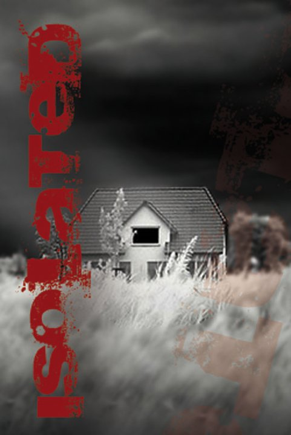
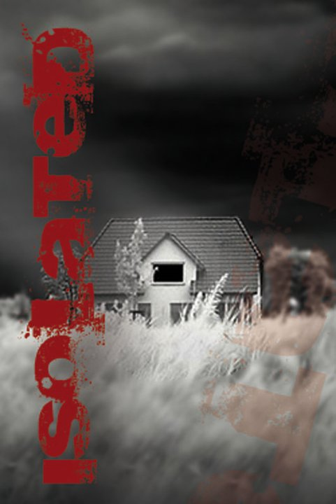
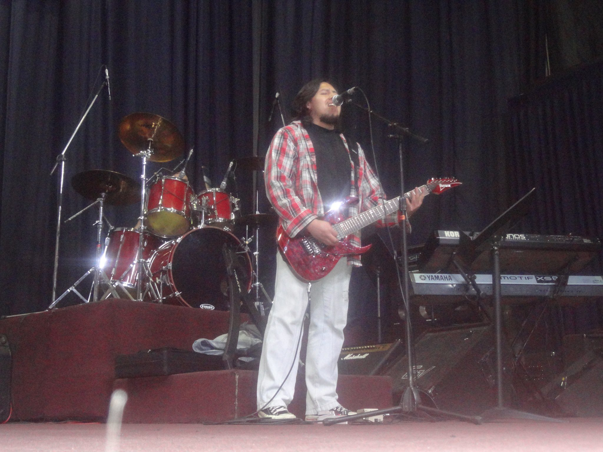
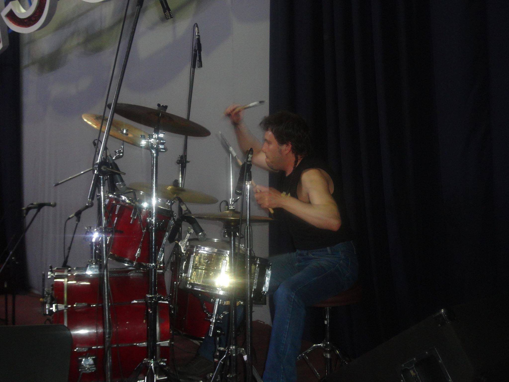

Images of the band:
click here to view more pics of the band.
 

FAVOURITE BANDS
TOP 5 FAVOURITE BANDS:
FAVOURITE INSTRUMENTS
TOP 5 FAVOURITE INSTRUMENTS:
HISTORY
.jpg)
1984–1989: Formation and early years The original lineup in a 1988 promo. From left: Jerry Cantrell, Sean Kinney, Mike Starr, Layne Staley. Before the formation of Alice in Chains, Layne Staley, a drummer at the time,landed his first gig as a vocalist when he auditioned to sing for a local glam metal band known as Sleze after receiving some encouragement from his stepbrother Ken Elmer. Other members of this group at that time were guitarists Johnny Bacolas and Zoli Semanate, drummer James Bergstrom, and bassist Byron Hansen. This band went through several lineup changes culminating with Nick Pollock as their sole guitarist and Bacolas switching to bass before discussions arose about changing their name to Alice in Chains. This was prompted by a conversation that Bacolas had with Russ Klatt, the lead singer of Slaughter Haus, about backstage passes. One of the passes said "Welcome to Wonderland", and they started talking about that being a reference to Alice in Wonderland, until Klatt said, "What about Alice in Chains? Put her in bondage and stuff like that." Bacolas thought the name "Alice in Chains" was cool and brought it up to his Sleze bandmates and everyone liked it, so they decided to change the name of the band. Due to concerns over the reference to female bondage, the group ultimately chose to spell it differently as Alice N' Chains to allay any parental concerns, though Staley's mother Nancy McCallum has said she was still not happy with this name at first. According to Bacolas, the decision to use the apostrophe-N combination in their name had nothing to do with the Los Angeles band Guns N' Roses. The name change happened in 1986, a year before Guns N' Roses became a household name with their first album Appetite for Destruction, released in July 1987.
MUSICAL STYLE
Although Alice in Chains has been labeled grunge by the mainstream media,Jerry Cantrell identifies the band as primarily heavy metal. He told Guitar World in 1996, "We're a lot of different things ... I don't quite know what the mixture is, but there's definitely metal, blues, rock and roll, maybe a touch of punk. The metal part will never leave, and I never want it to." The Edmonton Journal has stated, "Living and playing in Seattle might have got them the grunge tag, but they've always pretty much been a classic metal band to the core." Over the course of their career, the band's sound has also been described as alternative metal, sludge metal,doom metal,[282][283] drone rock, hard rock, and alternative rock. Regarding the band's constant categorization by the media, Cantrell stated "When we first came out we were metal. Then we started being called alternative metal. Then grunge came out and then we were hard rock. And now, since we've started doing this again I've seen us listed as: hard rock, alternative, alternative metal and just straight metal. I walked into an HMV the other day to check out the placement and see what's on and they've got us relegated back into the metal section. Right back where we started!" Drummer Sean Kinney rejects the grunge label, stating in a 2013 interview "I mean, before we first came out there was no grunge, they hadn't invented that word. Before they invented the word grunge we were alternative rock and alternative metal and metal and rock, and we didn't give a shit whatever, we were a rock and roll band!."According to Mike Inez, they were always the metal stepchildren of the Seattle scene. The band are influenced to a great extent by English metal music; in 2018, Jerry Cantrell proclaimed Black Sabbath guitarist Tony Iommi as "one of his biggest" inspirations, whilst Layne Staley named his "first influences" as Black Sabbath and Deep Purple.Cantrell adjudged English rock singer Elton John as "the artist that made me want to be a musician." In addition, members of Alice in Chains have cited artists including AC/DC, Accept, Aerosmith, The Beatles, Black Flag,David Bowie, John Coltrane, Miles Davis, Dio, Funkadelic, Hanoi Rocks, Heart, Jimi Hendrix, Iron Maiden, King's X, Kiss, Led Zeppelin, Metallica, Motörhead, Mudhoney, Pink Floyd,Queensrÿche, the Rolling Stones, Rush, Scorpions, Soundgarden, The Stooges, Television,Thin Lizzy, U2, UFO, Van Halen, The Velvet Underground, Hank Williams, and ZZ Top as influential or inspirational. Jerry Cantrell's guitar style combines "pummeling riffs and expansive guitar textures" to create "slow, brooding minor-key grinds". He is also recognized for his natural ability to blend acoustic and electric guitars. While down-tuned, distorted guitars mixed with Staley's distinctive "snarl-to-a- scream" vocals appealed to heavy metal fans, the band also had "a sense of melody that was undeniable, " which introduced Alice in Chains to a much wider audience outside of the heavy metal underground. According to Stephen Thomas Erlewine of AllMusic, Alice in Chains' sound has a "Black Sabbath-style riffing and an unconventional vocal style." The band has been described by Erlewine as "hard enough for metal fans, yet their dark subject matter and punky attack placed them among the front ranks of the Seattle-based grunge bands." Three of the band's releases feature acoustic music, and while the band initially kept these releases separate, Alice in Chains' self-titled album combined the styles to form "a bleak, nihilistic sound that balanced grinding hard rock with subtly textured acoustic numbers." Alice in Chains is also noted for the unique vocal harmonies of Staley (or DuVall) and Cantrell, which included overlapping passages, dual lead vocals, and trademark harmonies typically separated by a major third. Cantrell said it was Staley who gave him the self-assurance to sing his own songs. Alyssa Burrows said the band's distinctive sound "came from Staley's vocal style and his lyrics dealing with personal struggles and addiction." Staley's songs were often considered "dark", [87] with themes such as drug abuse, depression, and suicide, while Cantrell's lyrics often dealt with personal relationships.
LEGACY
Alice in Chains has sold over 19 million records in the United States, and over 30 million records worldwide, released two number-one albums, had 23 top 40 singles, and has received eleven Grammy Award nominations.[12][203] The band was ranked number 34 on VH1's 100 Greatest Artists of Hard Rock.[308] Alice in Chains was named 15th greatest live band by Hit Parader,[309] with Staley placing as 27th-greatest heavy metal vocalist of all time.[310] The band's second album, Dirt, was named 5th-best album in the last two decades by Close-Up magazine in 2008.[311] In October 2008, Guitar World ranked Cantrell's solo in "Man in the Box" at No. 77 on their list of "100 Greatest Guitar Solos".[312] In August 2009, Alice in Chains won the Kerrang! Icon Award. [313] In November 2011, Jar of Flies was ranked number four on Guitar World magazine's top ten list of guitar albums of 1994.[314] It was also featured in Guitar World magazine's "Superunknown: 50 Iconic Albums That Defined 1994" list,[315] and in May 2014, the EP was placed at number five on Loudwire's "10 Best Hard Rock Albums of 1994" list.[316] In June 2017, Metal Injection ranked Alice in Chains at number 1 on their list of "10 Heaviest Grunge Bands".[317] Ozzy Osbourne ranked Facelift among his list of "10 Favorite Metal Albums".[318]
MEMBERS
Current members Jerry Cantrell – lead guitar, backing vocals (1987–2002, 2005–present), co-lead vocals (1992–2002, 2006–present), rhythm guitar (1987–2002, 2005–2006) Sean Kinney – drums, backing vocals (1987–2002, 2005–present) Mike Inez – bass, backing vocals (1993–2002, 2005–present) William DuVall – co-lead and backing vocals, rhythm guitar (2006–present) Former members Layne Staley – lead vocals (1987–2002; died 2002), additional guitars (1992–2002) Mike Starr – bass, back